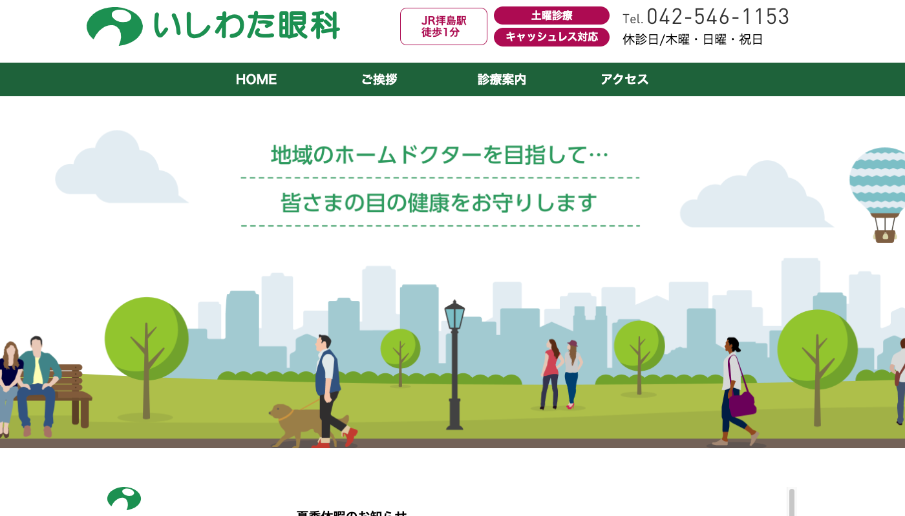
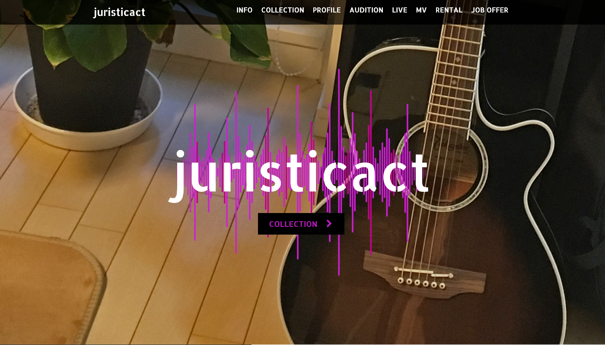
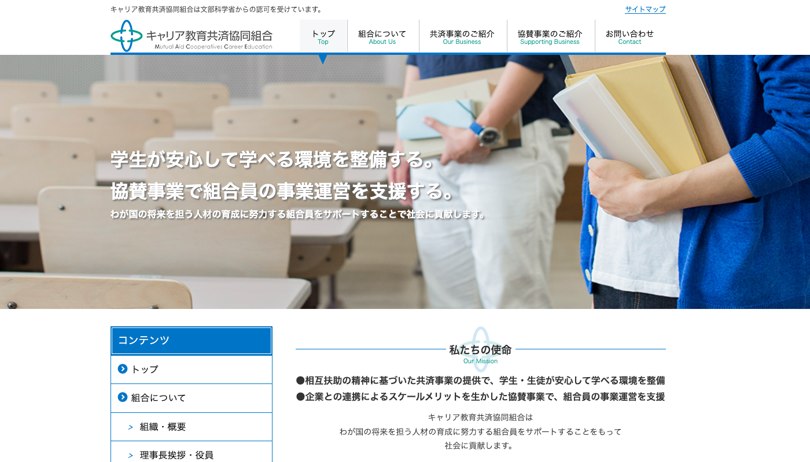
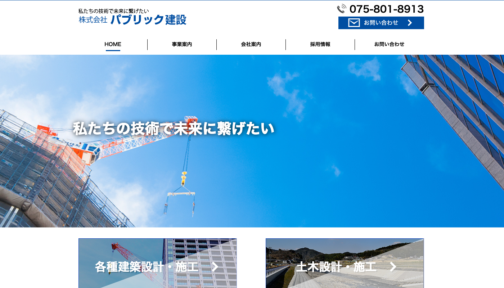
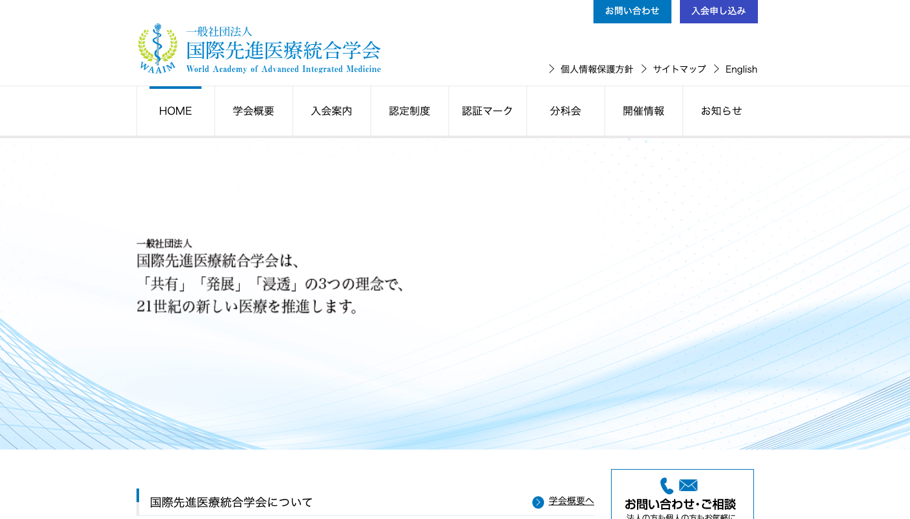
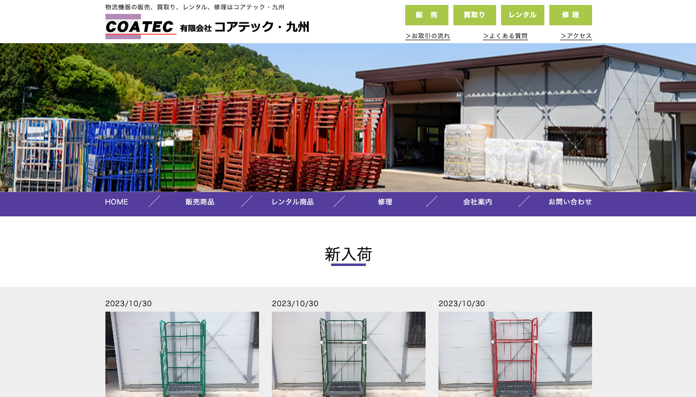

制作実績
実績一覧

歯医者

眼科
コーディングを担当しました。
東京都昭島市松原町にある眼科さんのサイトです。
眼科専門で様々な症状に対応しているため、コンテンツをどう見せるかを大切にしました。

音楽
コーディングを担当しました。
個人ミュージシャンのサイトです。
初めて入社した制作会社で、ウェブサイトの更新作業に慣れてきた頃に、ゼロからの制作を担当することになりました。
コーディング環境を整えるところから分からない状態でしたが、先輩コーダーの方の力も借りながらなんとか完成させることができました。

教育
コーディングを担当しました。
専修学校・各種学校など、キャリア教育・職業教育を行う教育機関（学校）を“組合員”とする協同組合のサイトです。
レスポンシブ非対応で制作しました。初めて制作したサイトで苦労したので、2回目は比較的スムーズに制作できました。

建設
コーディングを担当しました。
建設会社のサイトです。青色だけのシンプルな配色でありながらも、コンテンツを見やすく配置することで、サイトの印象をわかりやすくしました。

医療
コーディングを担当しました。
抗老化医学を中心とした先進医療、統合医療などを臨床科学的に研究・調査・追究し、病気の治療、健康の増進に寄与することを目的に設立された学会のサイトです。
お知らせ部分はWordPressを組み込んで制作しました。
見せたいコンテンツが多く、何度も内容を変えながらもなんとか完成させることができました。

物流
コーディングを担当しました。
物流会社のサイトです。制作した当時は1ページのサイトでした。
納期が短くて、業務終了後も深夜近くまで作業をしていました。動作確認は社内の人に手伝ってもらい、なんとか納品できました。
コーディングを担当しました。
横浜市都筑区北山田にある歯医者さんのサイトです。
レスポンシブ時の文字サイズと全体のバランスを意識しました。